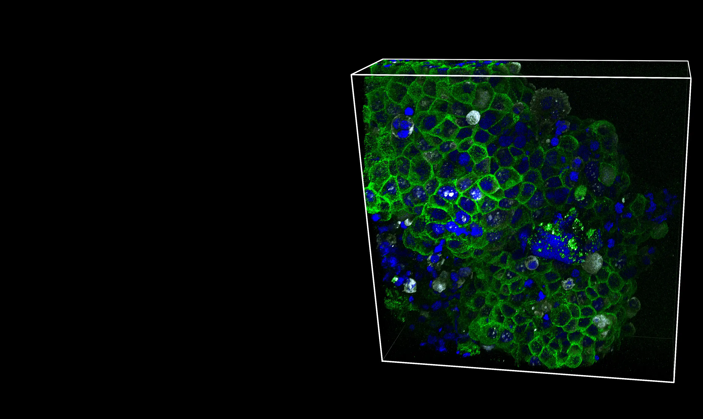

Sulfated hyaluronan: a novel player in cancer therapeutic and bioengineering approaches
Biology of Extracellular Matrix - Hyaluronan · 2023

🚧UNDER CONSTRUCTION🚧
Development and characterisation of 3D cancer spheroids using advanced imaging pipelines (confocal, SEM)
Development and evaluation of modified hyaluronan molecules as antitumour agents across 2D and 3D in vitro models, in vivo, and characterising its mechanism of action through biochemical and in silico approaches.
Studying the physical and biochemical properties of the ECM that shape tumour progression.
Isolation and culture of OPCs and NSCs to investigate proliferation and senescence dynamics in the ageing brain.
Preclinical validation of newly synthesised candidate compounds in breast cancer models.
Fold-change calculator and visualiser for qPCR data. Supports the Livak and Pfaffl methods, flags outlier replicates, and outputs publication-ready bar charts.
Easy-to-use editor to create, customise, and embed a career timeline on your personal website. No build tools, no frameworks, no server. Open in a browser, build a timeline, export it as a standalone HTML page.
Biology of Extracellular Matrix - Hyaluronan · 2023
The FEBS Journal · 2023
Stem Cell Reports · 2021
The FEBS Journal · 2026